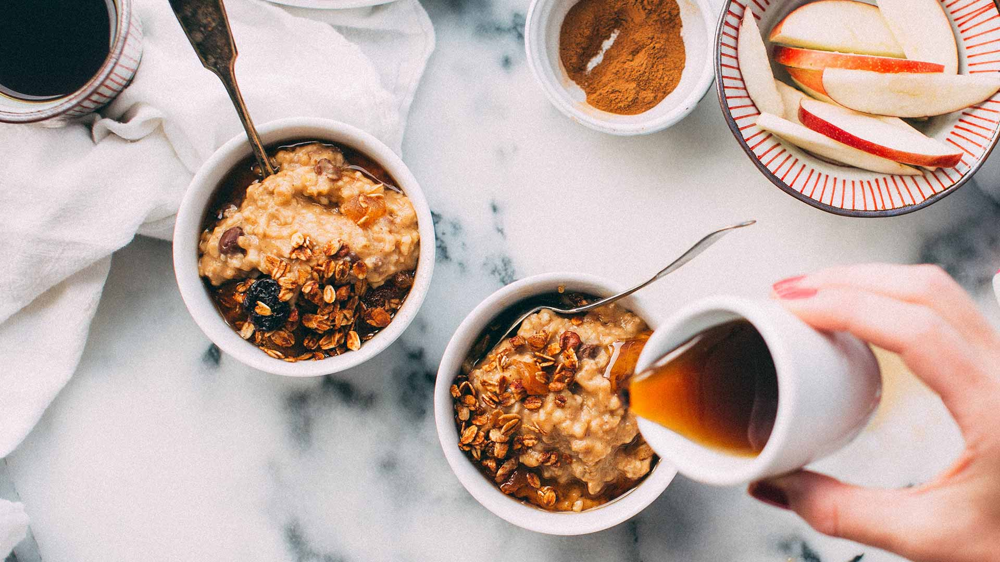

Difficulty: easy
Preparation time: 10 min
Tags: #breakfast #brunch #dessert
Ingredients
- 1/2 tablespoon unsalted butter
- 1 medium crisp apple, about 1 1/2 cups diced
- 3 tablespoons honey
- 1 teaspoon cinnamon
- 1/4 teaspoon ground ginger
- 1/4 teaspoon ground nutmeg
- pinch of salt
- 2 cups water
- 1 cup old fashioned oats
- 1/2 cup chopped walnuts
- 1/2 cup milk
Instructions
- In a medium saucepan, melt the butter over medium high heat. Add 1 cup of the apples, the honey or brown sugar, and sprinkle in the spices and salt. Cook for 2-3 minutes until the apples are softened.
- Pour in the water, turn the heat up to high, and bring to a low boil. Add the oats and reduce the heat to medium/medium high. Cook, stirring occasionally for 3-5 more minutes.
- Add the walnuts (if using), and continue cooking until most of the liquid is absorbed. Divide the oatmeal between two bowls, sprinkle each with the remaining apples, drizzle with a little more honey, and splash 1/4 cup milk into each bowl.